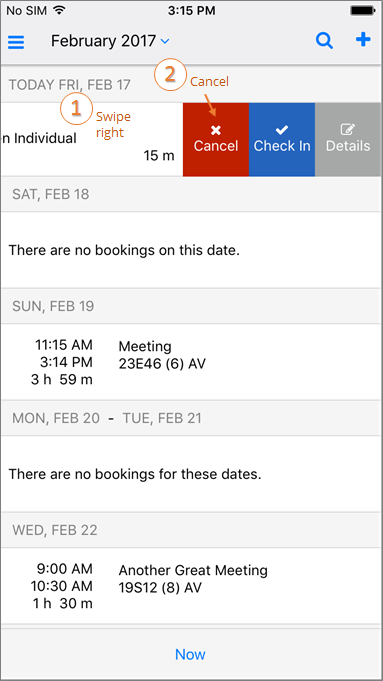
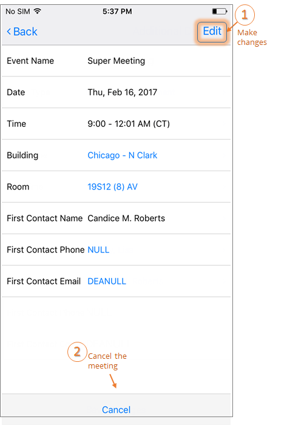

You can cancel an existing meeting in one of two ways:

Accessing the Cancel Option
If your meeting has taken less than the reserved time, you can End a meeting early to release the space for others. See Also: End a Meeting Early.

Cancel an Event Through Edit Screen